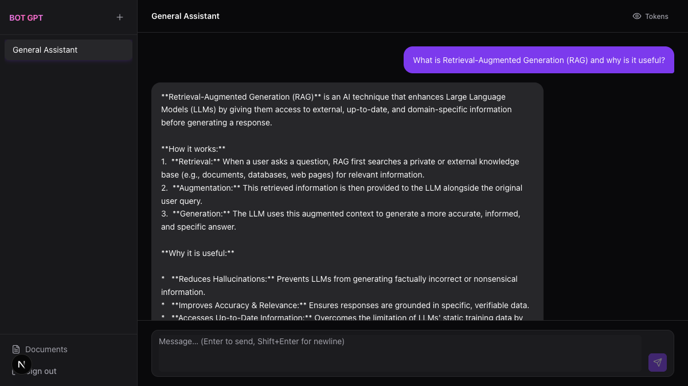
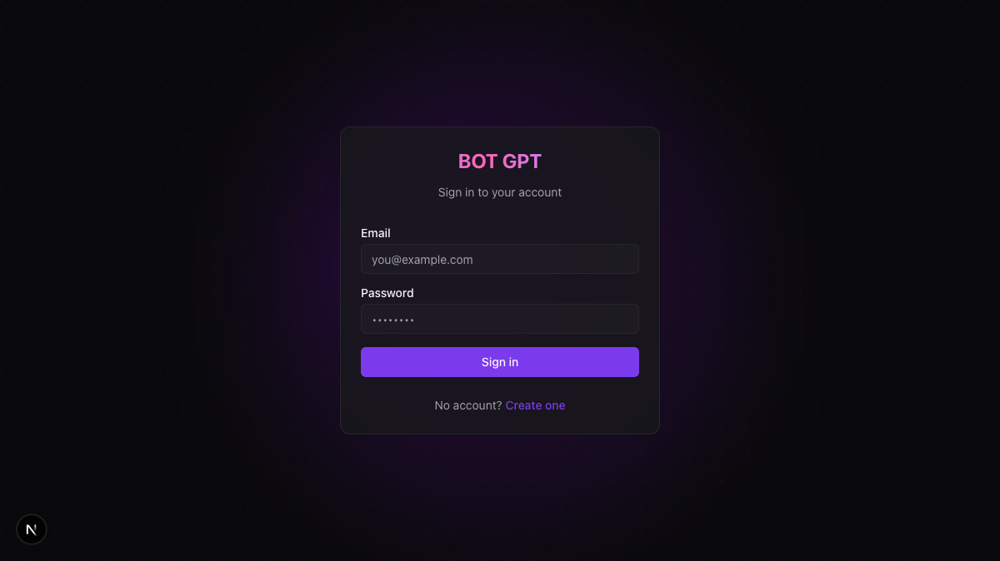
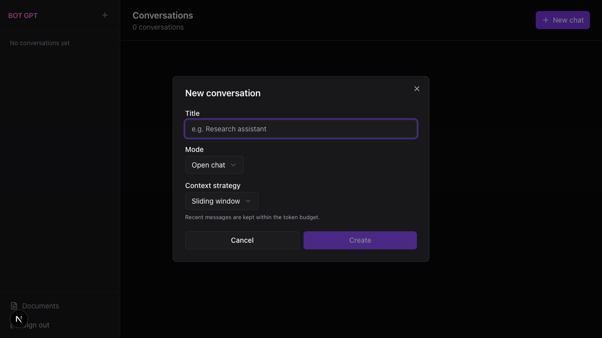
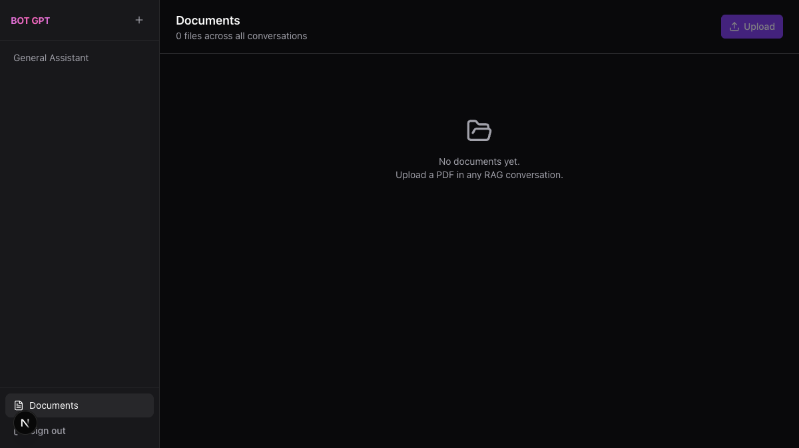

AI Engineer Case Study · BOT Consulting
Aman Pawar · 2026
A full-stack AI chat platform with two conversation modes:
Streaming conversations with Gemini 2.5 Flash. Sliding window or summarization context strategy per conversation.
Upload PDFs → embedded into pgvector → every answer grounded in your documents, not training data.
JWT auth · daily token limits · retry backoff · in-memory caching · multi-stage Docker · GitHub Actions CI


Stateless — no session store needed
Each conversation has two key settings chosen at creation:
Open chat — pure LLM conversation, no documents.
RAG — answers grounded in uploaded PDFs only.
Sliding window — newest messages kept within token budget. Zero extra API calls.
Summarization — older turns LLM-compressed into a paragraph. Preserves semantic context.

Simulated token stream:
Real Gemini 2.5 Flash response
Default — zero extra API calls. Always keeps the most recent context.
We want to guarantee the most recent turn is always present. Walking from oldest→newest would drop it under budget pressure.
Math.ceil(text.length / 4) — synchronous, zero latency. Stored on each message at save time.
RAG uses 6k (not 8k) to leave headroom for the retrieved chunk context block injected into the final message.
For long conversations — preserves semantic content of old turns at the cost of one extra LLM call.
Bug fixed this session: original code built recent window at full budget, then prepended summary — could silently exceed the budget. Fixed by deducting summary tokens before the second buildContextWindow call.
Key: filter: { conversation_id } scopes vector search to this conversation's documents only — no cross-contamination.
S3-compatible API — zero egress fees vs AWS S3. Raw file stored for potential re-processing. Public URL returned and saved in documents.r2_url.

Upload button triggers multipart POST
Hard cap of 100 000 tokens / user / UTC day — enforced before any LLM call or SSE headers.
Once Content-Type: text/event-stream is written, the response is locked — you can only write SSE events, not switch to a JSON error body. The limit check must happen first.
startOfDay.setUTCHours(0,0,0,0) — consistent boundary regardless of user timezone.
DAILY_TOKEN_LIMIT=100000 — defaults to 100k if not set. Adjustable per environment.
private async withRetry<T>(
fn: () => Promise<T>,
maxAttempts = 3,
): Promise<T> {
let delay = 1000;
let lastError: unknown;
for (let i = 1; i <= maxAttempts; i++) {
try {
return await fn();
} catch (err) {
lastError = err;
if (i < maxAttempts) {
await sleep(delay);
delay *= 2; // 1s → 2s → 4s
}
}
}
throw lastError; // bubble up after 3 fails
}
// Usage:
const stream = await this.withRetry(
() => this.llm.stream(messages)
);Mock setTimeout to run instantly, make llm.stream fail twice then succeed. Assert tokens arrive on attempt 3 and mockStream called exactly 3 times.
Single instance deployment. NestJS CacheModule (node-cache internally) adds zero infrastructure. Redis is the right call when running multiple API instances that need a shared cache.
Only GET /conversations — the highest-frequency read. Single conversation fetches (GET /conversations/:id) are not cached since they include the full message list and change with every send.
Replace CacheModule.register() with CacheModule.registerAsync() + @nestjs/cache-manager Redis store. Zero changes to service code.
# Stage 1: deps — layer-cached
FROM node:20-alpine AS deps
WORKDIR /app
COPY package*.json ./
RUN npm ci
# Stage 2: builder
FROM node:20-alpine AS builder
COPY --from=deps /app/node_modules ./node_modules
COPY . .
RUN npm run build # → dist/
# Stage 3: runner (minimal)
FROM node:20-alpine AS runner
ENV NODE_ENV=production
RUN addgroup --system --gid 1001 nodejs \
&& adduser --system --uid 1001 nestjs
COPY --from=builder /app/dist ./dist
COPY --from=deps /app/node_modules ./node_modules
COPY package*.json ./
USER nestjs # non-root
EXPOSE 3001
CMD ["node", "dist/main"]on: [push, pull_request]
jobs:
lint:
runs-on: ubuntu-latest
steps:
- uses: actions/checkout@v4
- run: npm ci
- run: npm run lint
test:
runs-on: ubuntu-latest
services:
postgres:
image: pgvector/pgvector:pg17
env:
POSTGRES_DB: botgpt_test
options: >-
--health-cmd pg_isready
steps:
- uses: actions/checkout@v4
- run: npm ci
- run: npm testIf the container is compromised, uid 1001 cannot write to system directories or escalate privileges. Security best practice for production images.
Every feature: RED test first → implementation → GREEN. 40 tests, 5 suites, <2 seconds.
| Suite | Key scenarios | Tests |
|---|---|---|
auth.service.spec.ts |
Register (duplicate→409), login (bad pw→401), JWT issued on success | 5 |
conversations.service.spec.ts |
Create with default strategy, pagination, ownership 403/404, sliding window budget (incl. oversized message edge case), daily token query | 14 |
documents.service.spec.ts |
Upload + embed flow, list by user, delete + pgvector chunk cleanup | 5 |
ai.service.spec.ts |
estimateTokens, streamOpenChat, streamRagChat context injection, retry (2 fails then success; all 3 fail), summarizeHistory (3 cases), retrieveRelevantDocs | 16 |
setTimeout to run instantly — no real waits. Tests run with zero network or DB required.
Read replicas for GET /conversations + message history.
PgBouncer for connection pooling.
Partition doc_embeddings by conversation_id.
Shard messages by conversation_id at extreme scale.
Redis cache for repeated RAG queries (same question + same docs = same answer).
BullMQ queue for document embedding — async, retryable, off the request path.
Swap in-memory CacheModule for Redis store.
Zero service code changes — just config swap.
Enables shared cache across multiple API instances.
✓ JWT auth — register + login
✓ Streaming chat via SSE
✓ RAG — pgvector + Gemini embeddings
✓ Sliding window context strategy
✓ Summarization context strategy
✓ Daily token limit (100k / day)
✓ Exponential backoff retry (3×)
✓ In-memory conversation list cache
✓ Multi-stage Docker (non-root)
✓ GitHub Actions CI (lint + test)
✓ Next.js 15 frontend + shadcn/ui
✓ 40 unit tests · TDD throughout